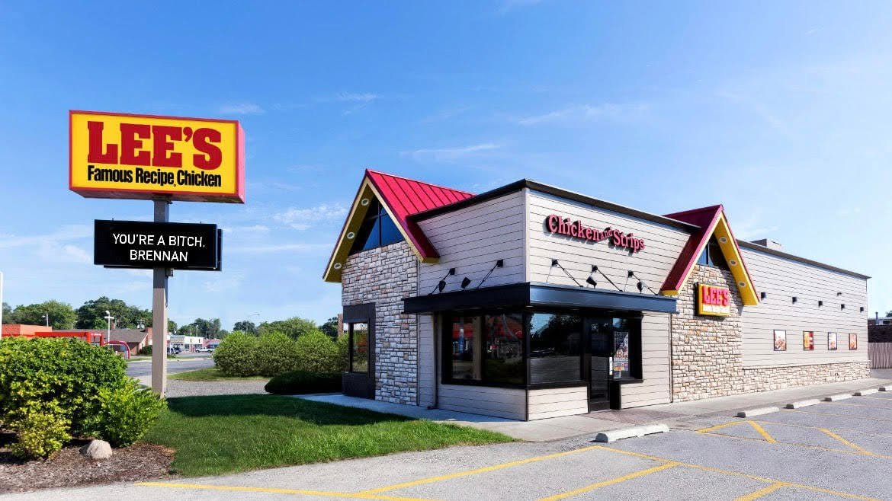

The Society Pages
Unemployed Berea Man Furious at Lack of Workers at Lee's Famous Recipe
Brennan Huff says he's just four to five visits a week away from buying the place outright, just as soon as his online gaming career pays off.

BEREA — Berea native and member of the Madison County Foodies group, Brennan Huff, was “fed up” late Tuesday night with the lack of workers at Berea's Lee's Chicken location.
In a statement obtained by the Observer, Huff claimed he had a very unpleasant experience in the drive-thru late last night, as he went out to pick up dinner for him and his mom.
“First of all, I was told that they didn't have any chicken legs made, so I was going to have to wait for almost ten minutes,” Huff said very angrily.
“Then I finally pull up to the window, and they tell me to pull forward and that they will bring it out because they're waiting on my biscuits and mashed potatoes to come out.”
“My mom paid for this meal just the same as everyone else!”
“What does a man have to do to get some fried chicken around here?!” Huff shouted.
The Observer reached out to a manager at the Lee's, who confirmed that the restaurant is indeed short staffed, and that he himself had invited Mr. Huff to come in and fill out an application, since he is there four to five days per week anyway.
When The Observer asked Huff if he was interested in filling out an application for employment, he told us that working just really wasn't for him.
“It's just not my speed,” Huff said.
“Working just really sucks. People are always bitching at you and telling you what to do, it just generally sucks.”
“I'm really just hoping my online gaming career takes off soon, cause I'll probably be so rich, I'll just buy my own Lee's Chicken and make them jokers work a little faster.”— BRENNAN HUFF, MADISON COUNTY FOODIES MEMBER
Huff went on to explain that he was hopeful the restaurant could soon hire some more decent workers — just in case his online gaming career doesn't take off — or else he might have to start eating at the city's new KFC location across the street.
Letters to the Editor
Speak now, or forever hold your suspicions.
Continue Monitoring

EXCLUSIVE: Sasquatch Breaks Silence Ahead of Big Hill Line Hearing
The Observer sat down with one of Berea College Forest's most elusive — and longest-standing — residents.

Jim Caldwell Leaves WKYT After Altercations With Sentient AI Radar System
The station's AI-integrated Doppler system, Climatron 3000, reportedly seized control of the forecast — and its human coworker.